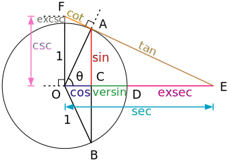

Angle Help
Angle Help
Производится преобразование градусов в десятичном формате в градусы-минуты-секунды, или наоборот
Порядок работы
- Ввести величину угла в окно ввода "Angle in decimal grad" или в окна ввода "Angle in grad, min, sec"
- Если необходимо узнать тригонометрические параметры угла то нажать кнопку "Calculate Angle's Trig"
Тригонометрические функции угла θ внутри единичной окружности
